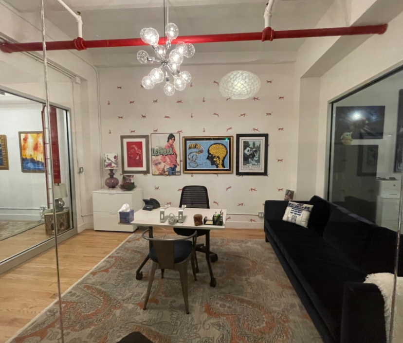

Creative Direction & Design
I’ve always created visually compelling work—whether onstage, onscreen, or in physical spaces. My creative direction brings a sense of emotional storytelling and bold composition to every project. From theatrical design to immersive installations and space transformations, I partner with clients to make memorable, meaningful work.
Chaudry Law Office
Designed in collaboration with Priya Chaudry, this project was a partnership built on trust, humor, and curiosity. Together we brought joy and a sense of delight into a traditionally serious environment. Whimsy, warmth, and playfulness merged with professionalism to create a truly inviting space.
Theatrical Work
I created visually stunning theatrical pieces for Jobsite Theater, Sun & Splendor Theater Company, and Group 120. Each production is rooted in story, feeling, and visual metaphors that heighten the performance experience. I work across styles—from the intimate to the grand—and with a deep respect for collaboration.
Interested in working together?
You can schedule a consultation here.